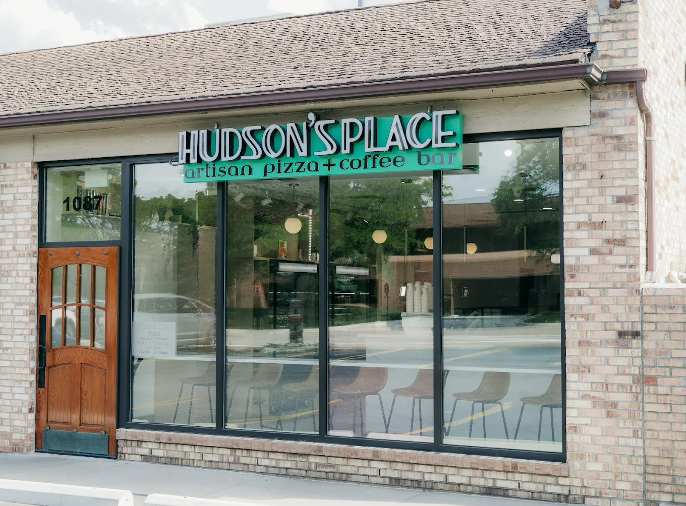
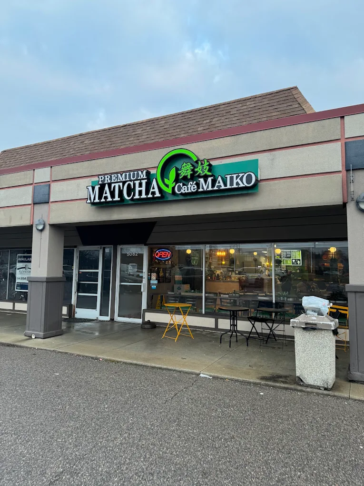
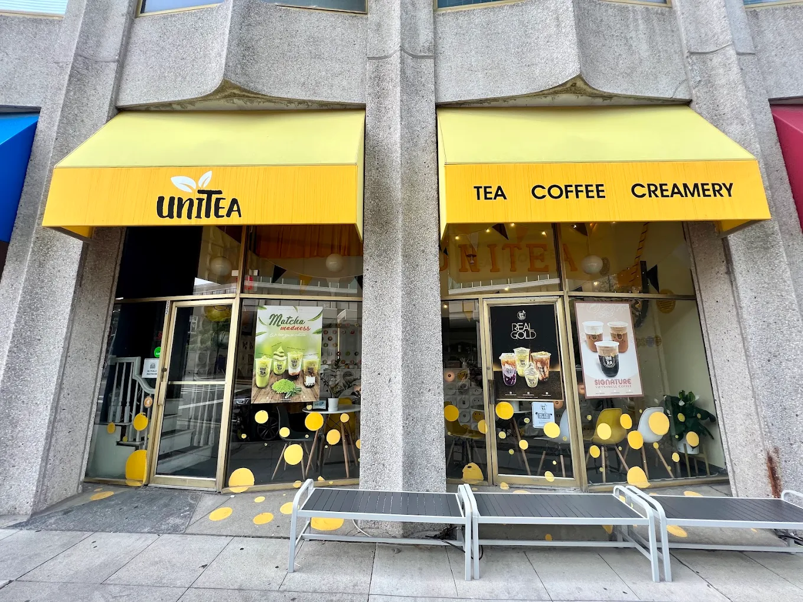
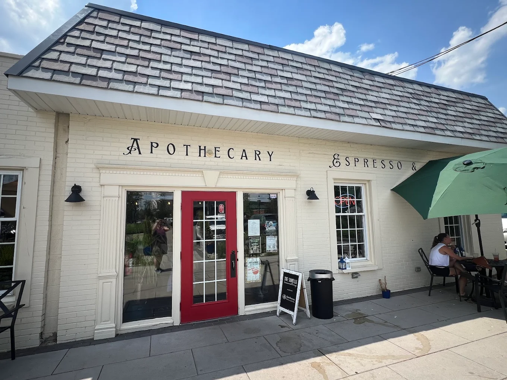
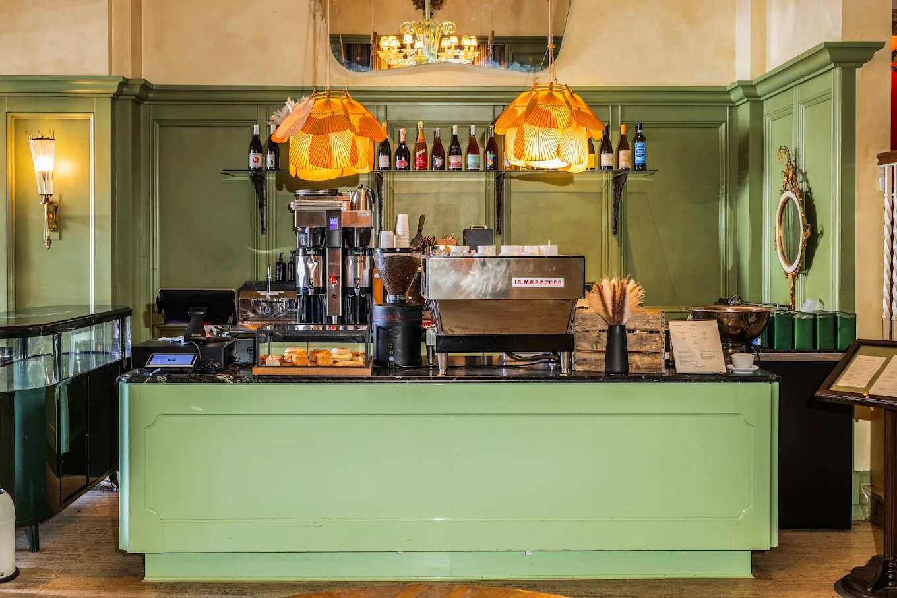
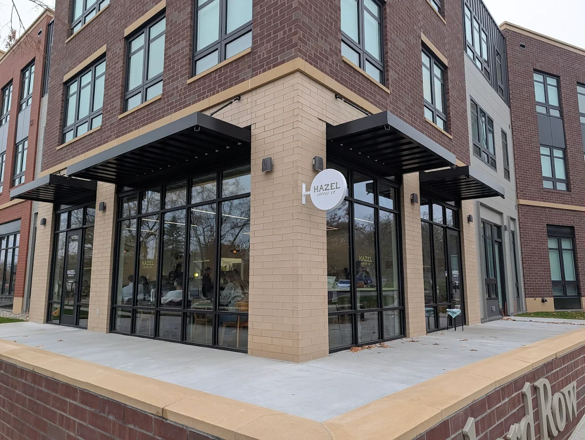
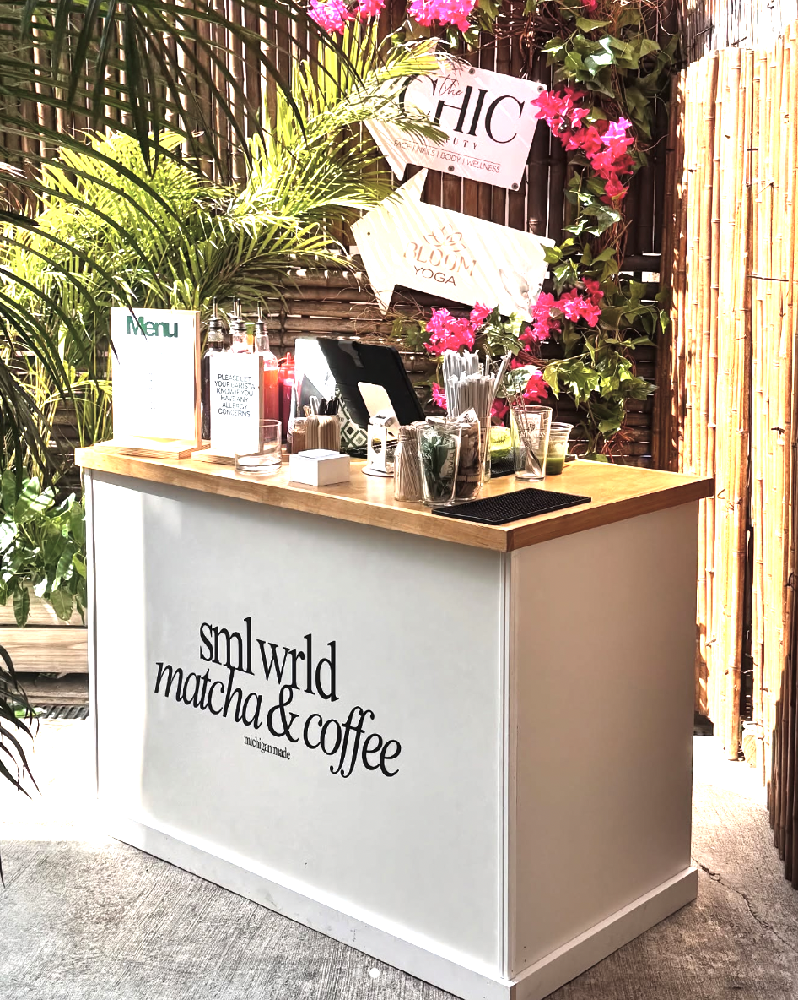
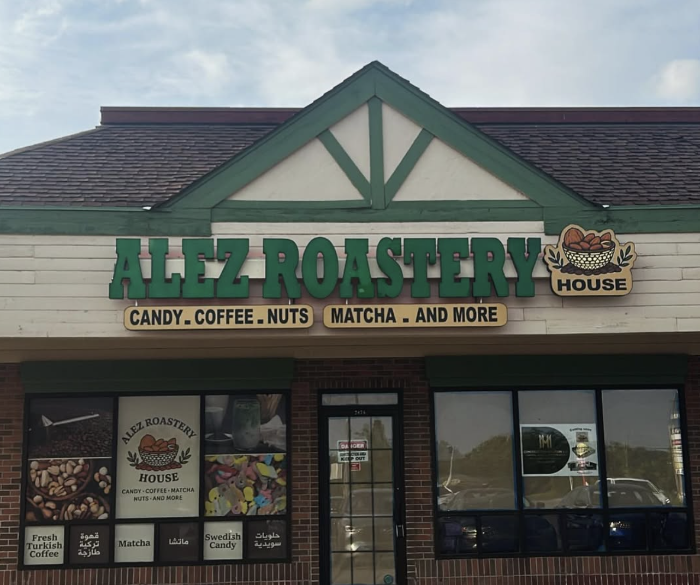

Hudson's Place
📍 Bloomfield Hills, MI
Price: $$
A charming café-pizzeria hybrid known for its artisanal pizzas, smooth matcha, and warm neighborhood vibe. Great for quick stops or a catch up with friends.
Visit WebsiteA curated collection of Metro Detroit's best matcha cafés thoughtfully reviewed so you can spend your time (and money) at places that truly deliver.

📍 Bloomfield Hills, MI
Price: $$
A charming café-pizzeria hybrid known for its artisanal pizzas, smooth matcha, and warm neighborhood vibe. Great for quick stops or a catch up with friends.
Visit Website
📍 Troy, MI
Price: $
A true matcha spot offering ceremonial-grade matcha from Uji, Japan. Perfect for studying or indulging in their signature matcha soft-serve.
Visit Website
📍 Ann Arbor, MI
Price: $$$
A popular campus-area tea café known for its huge drink menu. With limited seating and a busier vibe, it's better for grabbing a drink on the go than settling in to study.
Visit Website
📍 Farmington Hills, MI
Price: $
A beautifully designed café known for its smooth matcha and thoughtfully crafted drinks. The warm, peaceful atmosphere makes it ideal for slow mornings or catching up with a friend.
Visit Website
📍 Detroit, MI
Price: $$
A modern, stylish café offering creative matcha drinks in an airy, light-filled space. Perfect for a quick pick-me-up or a weekend stop with great vibes.
Visit Website
📍 Ann Arbor, MI
Price: $
A newly opened Ann Arbor café with a clean, minimalist vibe and a focus on high-quality coffee and matcha. With a bright, modern interior, it's great for a quick stop or a quiet moment with a well-made drink.
Visit Website
📍 Ann Arbor, MI 📍 Detroit, MI
Price: $$$
A rotating pop-up café known for its creative matcha drinks, experimental flavors, and artsy, community-centered vibe. A fun spot to try limited-time drinks and support local creators.
Visit Website
📍 Ypsilanti, MI
Price: $$$
A locally loved roastery in Ypsilanti known for its fresh small-batch coffee, smooth matcha, and welcoming neighborhood feel. It's a simple, no-frills spot with quality drinks and a warm community vibe.
Visit WebsiteNote: Cafe information is current as of December 2025. Please check individual cafe websites for the latest hours, menu items, and pricing.